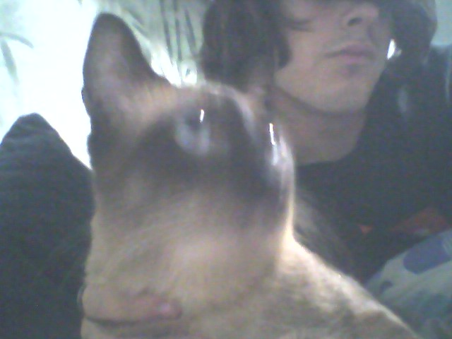

status: loading,,
introduction
welcome to my personal blog, i will probably rant about dumb stuff here and share stuff i find mildly cool or interesting.
i decided to start this blog because i sought a place in which to express myself, and i'm not great at art, but i am at programming :p
about me!
i'm an undergraduate mathematics student, i'm 18 years old and i live in zaragoza, spain. i have a cat called peepo, pronounced [pˈipo].
i love learning new things, one of my favorite activities is reading random articles about stuff that often times doesn't turn out to be interesting,
or i have amicable debates with friends and strangers about any topics.
i also enjoy hobbies such as board games and card games, doing small electronics experiments with my arduino controller, or with python code.
other than that, i like playing chess, i enjoy doing casual hiking,
and since recently i'm learning (and failing) to ride on a skateboard.
as of now, you can go check out the stuff that happens to me day to day in my diary, or you can see the tomfooleries and experiments that i'm cooking up, check out other stuff. that's all, thanks a lot for reading my blog :3